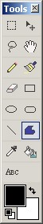

The Free Form Shape Tool (Tools --> Free Form Shape) allows for creating a bounded area easily. The basic operation involves clicking on the active layer and dragging the mouse around on the layer. It has a very similar feel to it as the Lasso Select Tool. Once the button is let go, the free form shape is completed automatically, and if the "Draw Filled Shape With Outline" button is pressed, the bounded area will be filled.
 The option available are:
Draw Outline, Draw Filled Shape With Outline, and Draw Filled Shape (without
outline). You can choose this option from the tool
bar.
The option available are:
Draw Outline, Draw Filled Shape With Outline, and Draw Filled Shape (without
outline). You can choose this option from the tool
bar.
To the left is an example usage of the Free Form Tool and the "Draw Filled Shape With Outline" button. Notice how the shapes have a "blob" like look to them. This is very characteristic of this tool.